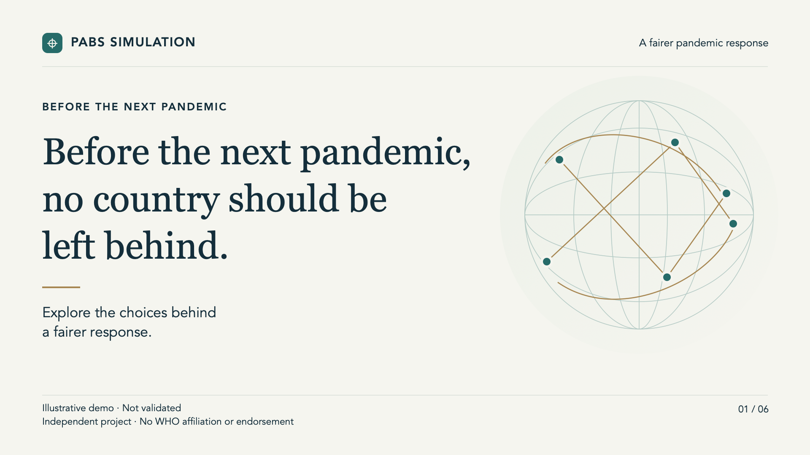
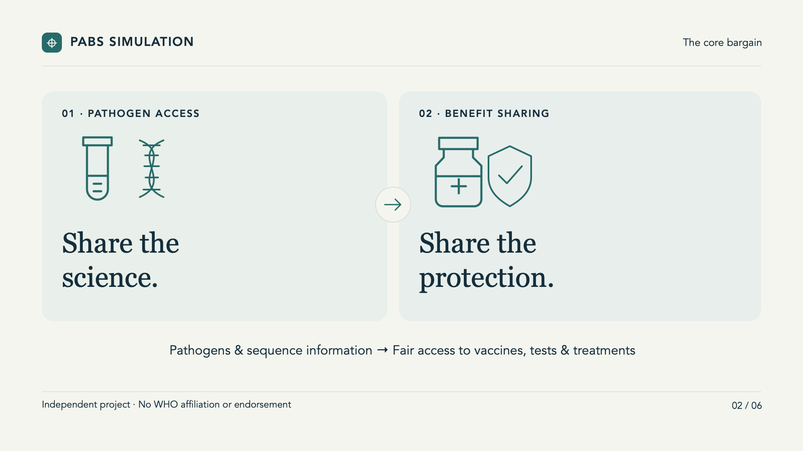
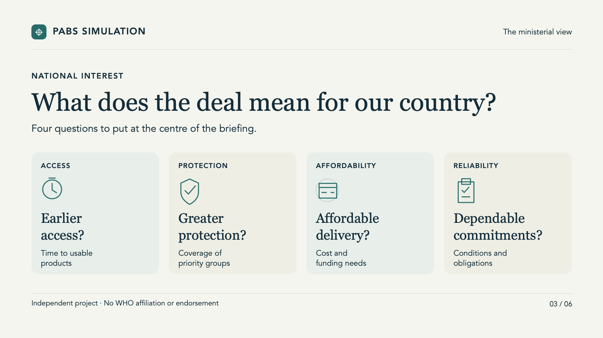
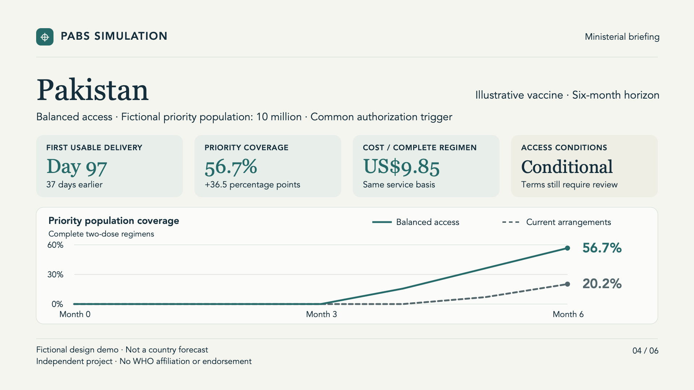
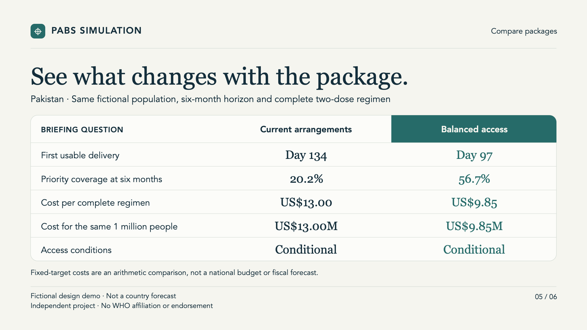
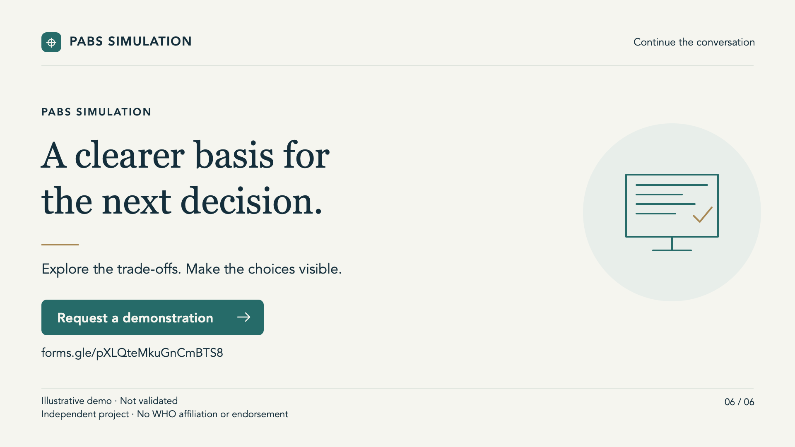
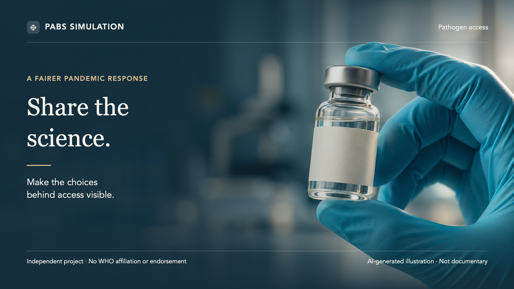
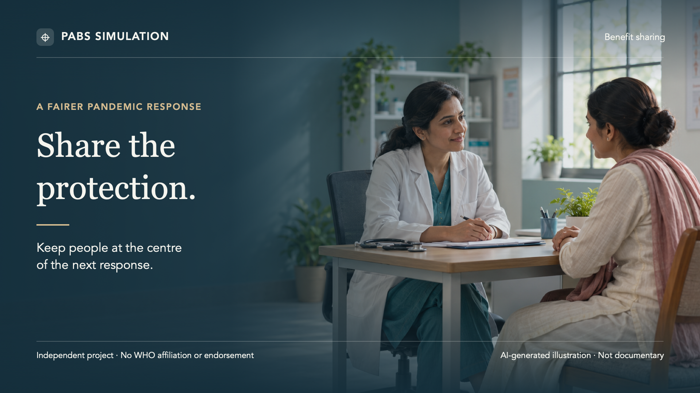

00–18 s · Core sequence
Before the next pandemic
An editorial opening with a restrained abstract globe.
Video graphics · 1920 × 1080 · Editable source files
Updated demonstration · Graphics collection
Eight clean graphics for the pitch: a six-scene editorial sequence, plus two optional illustrated transitions. Preview each plate and download its video-ready PNG or editable SVG.

00–18 s · Core sequence
An editorial opening with a restrained abstract globe.

18–30 s · Core sequence
A clear exchange between pathogen access and benefit sharing.

30–40 s · Core sequence
Access, protection, affordability and dependable commitments.

40–55 s · Fictional design demo
Four sample KPIs and a coverage curve derived from the updated demo.

55–68 s · Fictional design demo
Two packages, one horizon, and an equal-service cost comparison.

68–80.5 s · Core sequence
A simple close with a demonstration invitation.

Optional · AI-generated illustration
An optional photographic transition with editable caption text.

Optional · AI-generated illustration
An optional community-focused transition with editable text.
Optional illustration sources
The original generated images are included separately for future crops, motion and alternative captions. Live text in the SVGs remains editable; the PNG exports are ready to place in a video editor.